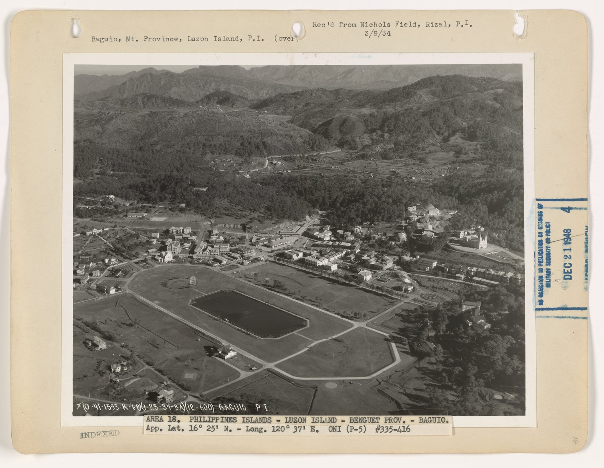
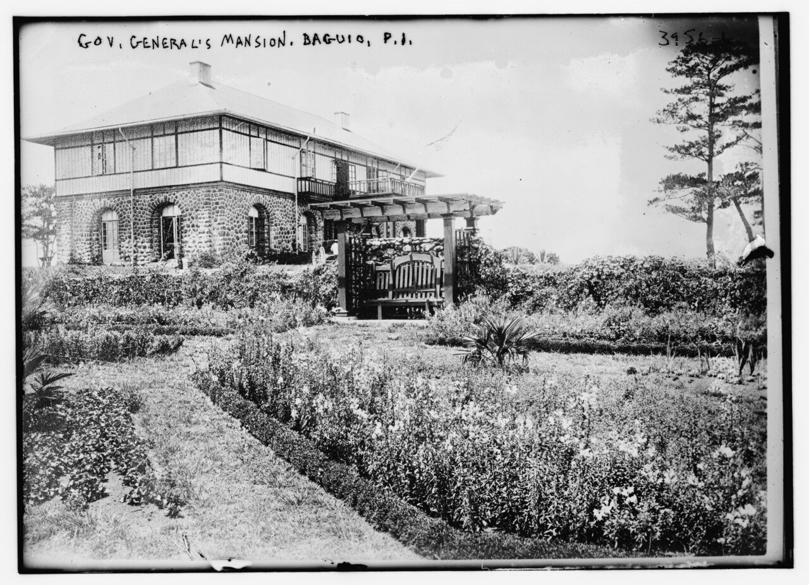

The Cordillera Plateau sits 5,000 feet above the Philippine lowlands, 150 miles north of Manila and a world cooler. The Spanish governed the islands for 333 years and never built a town there. The Igorot peoples lived in the mountains and the colonial administration left them mostly alone. When the Americans took over in 1898 they did what the British had done in India: they decided they needed a hill station. A government in Manila during the dry season is a government nobody can think in.
The Philippine Commission, the colonial government Taft was running, declared Baguio a reservation in 1903. They built a road up from the lowlands, the Kennon Road, blasted out of the Bued River canyon by a Colonel Lyman Kennon and his crews of Filipino laborers and American engineers. It opened in January 1905 after killing somewhere over a hundred workers. The road made the plateau reachable. The plateau still needed a city.
Daniel Burnham came up the new road in November 1904, with his junior partner Pierce Anderson. They spent ten days riding the ridges, sketching, taking compass bearings. Burnham went home and produced two plans, one for Manila and one for Baguio, and delivered both in June 1905. He never went back. William Parsons, the Consulting Architect to the Philippine Government from 1905 to 1914, executed the Baguio plan year by year as funds came through Congress.
A town for 25,000 people built around a central rectangular park, a half-mile long, with an artificial lake at its lower end. The park would serve as the visual and ceremonial center of the city, the way Hyde Park serves London or the Common serves Boston. He drew it directly on what had been a swampy mountain meadow. The park is still there. The Filipinos named it Burnham Park.
A civic center on Session Hill, the highest point near the central park. The administration buildings, a Hall of Justice, a market, the post office, the legislative offices: all clustered on the hill, looking down across the park toward the residential districts on the surrounding ridges. The model was the Capitol on Capitol Hill in Washington, scaled down to a town the size of Reno.
A street system that worked with the topography rather than against it. Burnham did not impose a grid on a mountain. He laid out his diagonals to follow the ridge lines and used switchback curves where the slope demanded them. The result is a town where the streets actually go where they need to go and where every neighborhood has a view down the valley.
A summer residence for the Governor General on a ridge above the city, oriented toward the morning sun. It was built in 1908 by Parsons in a vaguely Mediterranean style and has served as the summer residence of every Philippine head of state since, including the American Governors General, the Commonwealth Presidents, and the Republic.

A market, a parade ground, a high school, a country club, a Filipino quarter and an American quarter (a colonial conceit Burnham did not invent but did accept), a perimeter of forest reserves to keep the climate cool and the watershed intact. The plan held together as a coherent program. It was small enough to actually build.
5,000 ft elevation of the Cordillera plateau site
25,000 the population Burnham planned for
10 days Burnham's total time on the ground in Baguio
June 1905 Plan delivered, alongside Manila
~350,000 Baguio population today, fourteen times what was planned
Most of it. Burnham Park was carved out and the lake was dug. The civic center went up on Session Hill in stages between 1908 and 1925. The Mansion House was completed in 1908. Camp John Hay, the United States military rest and recreation reservation that anchored the southern edge of the city, was developed in parallel and gave Baguio a 690-hectare green belt that survived intact through the rest of the century. Session Road, the commercial spine running down from the civic center along Burnham's main alignment, became the city's high street and remains so. The Pines Hotel, the Mansion, the Country Club, the Cathedral, the public market, the high school: all built per the plan, all on the alignments Burnham specified.
Baguio became, exactly as the Americans intended, the place the colonial government went in March, April, and May. The Philippine Commission held its sessions there, which is how Session Road got its name. By 1913 the city had electric lights, a telephone exchange, a railway station for the Benguet Railroad that briefly ran up the canyon, and 6,000 residents in season. By 1939 it was 25,000, the population Burnham had planned for, and was incorporated as a chartered city.
In December 1941 the Japanese Imperial Army invaded the Philippines. Baguio fell almost immediately. General Tomoyuki Yamashita, the conqueror of Singapore, set up his headquarters in the Mansion House. He ran the defense of Luzon from the city he was now destroying. In April 1945 the United States Army fought its way back up Kennon Road. American bombing, in advance of the ground assault, leveled most of central Baguio. The civic buildings on Session Hill were ruined. The Mansion House survived because Yamashita was using it. The Pines Hotel burned. The Cathedral was hit. Camp John Hay was retaken with the rest of the city in late April.
The reconstruction was substantially complete by the early 1960s. Most of the rebuilt buildings followed the original alignments and adapted the original silhouettes. The Mansion House was repaired. The civic center on Session Hill was rebuilt, less elegantly than the original. Burnham Park survived because parks are harder to ruin than buildings, and because the lake had not been a target.
On July 16, 1990, a magnitude 7.7 earthquake struck Northern Luzon and reduced large parts of central Baguio to rubble in seventeen seconds. The Hyatt Terraces collapsed. The Nevada Hotel collapsed. The Pines Hotel collapsed. The Cathedral cracked. More than a thousand people died in the city alone. The reconstruction this time was less faithful and produced the unplanned commercial sprawl that fills most of the central business district today. Burnham Park survived again, mostly intact. Session Road survived. The Mansion House survived.
It did not anticipate 350,000 people. Burnham drew a town for 25,000 and the population is now fourteen times that. The forest reserves Burnham specified as a perimeter belt have been progressively eaten by squatter settlements and unauthorized residential subdivisions on slopes that should have been left alone. The watershed is degraded. The traffic is now national news.
It did anticipate civic ambition. Burnham Park is still the symbolic center of the city. Session Road is still the commercial spine. The Mansion House is still the summer residence of the Republic. The Philippine Senate still calls its breaks the Baguio Recess. The original alignment of the city is still legible from any high point. The bones of the plan have outlasted the buildings, the colonial regime, the Japanese occupation, and the earthquake.
Baguio is the smallest of Burnham's executed plans and the most complete. It worked because it was small, because the geography was simple, and because the colonial administration had unilateral authority and could build the plan without consulting voters. Manila lost its plan in part because the political coalition collapsed when the Americans left. Baguio kept its plan because there was less to keep, and because the most important pieces of the plan, the park and the residence and the road system, were too large to be quietly replaced.
It is also a useful corrective to the impression that Burnham only worked at imperial scale. The Plan of Chicago is 164 pages of Beaux-Arts grandeur for a metropolis. The Plan of Baguio is a sketch of a small town for a quarter the population of Bellingham, drawn on a mountain in ten days, and most of it got built. Burnham's program scaled up and it scaled down. The same vocabulary that produced the Chicago lakefront produced a hill town in the tropics.
We are publishing the Plan of Baguio because it is the only Burnham plan that was substantially built and is still substantially in use. The drawings sit in the National Archives in Manila and the Ryerson and Burnham Libraries at the Art Institute of Chicago. They are almost unknown outside the Philippines. They are also the closest working model we have for what a Burnham plan looks like a hundred and twenty years after delivery. If you want to understand whether City Beautiful was a real program or a coffee-table fantasy, the answer is on the Cordillera Plateau, in season, with the President in residence.
Have research, archives, photos, or Baguio civic connections? Tell us who you are.